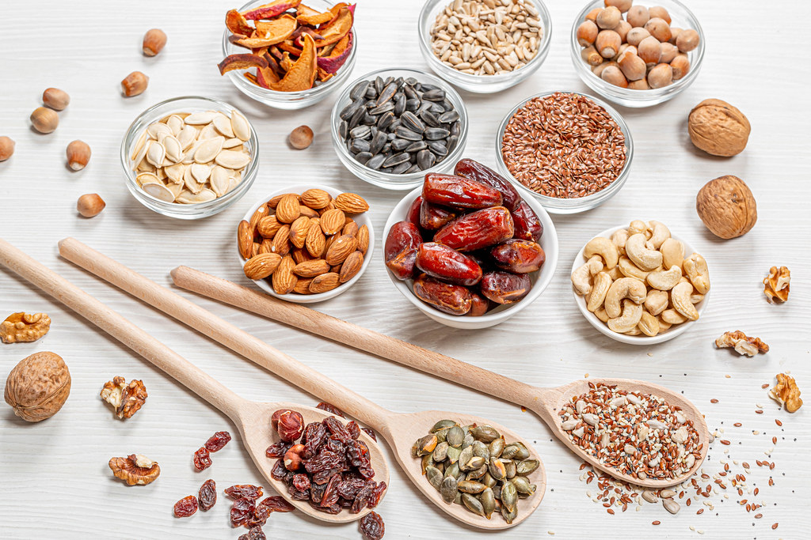
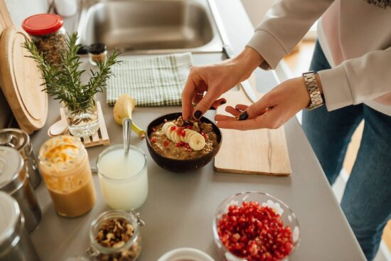
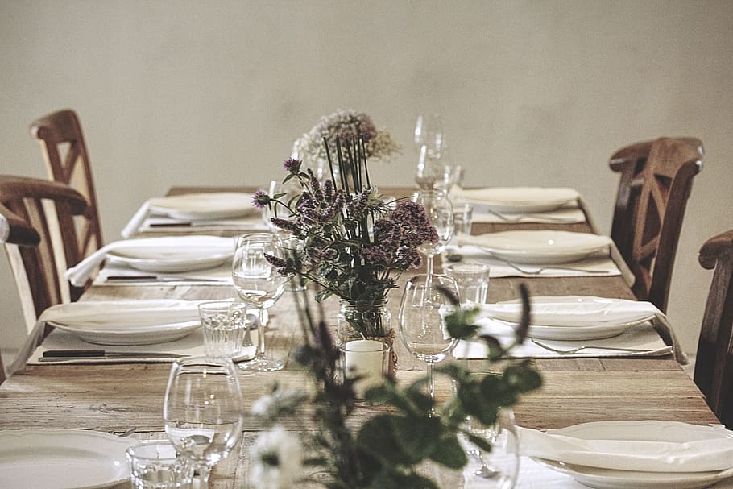
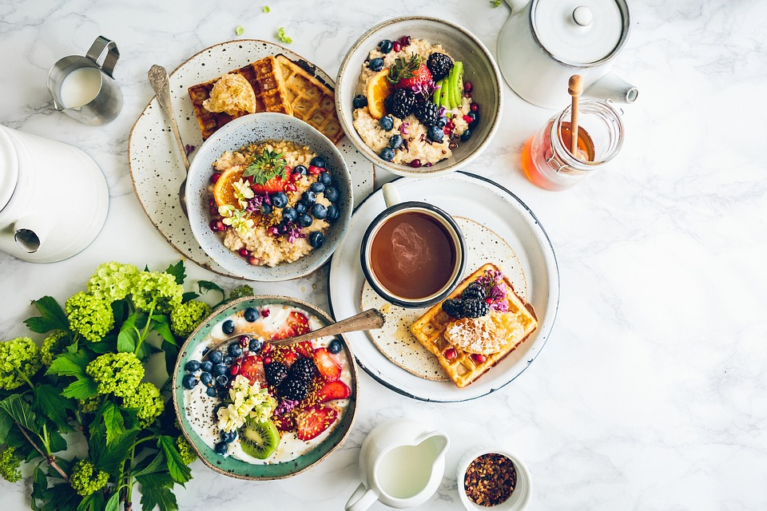

Preparing your own Oatmeal Party
Follow these steps, so you can throw a rad oatmeal party
- 1) Acquire a variety pack of instant oatmeal packets.
- 
- 2) Gather your toppings. Here are some to get you started:
- Brown sugar
- Honey
- Peanut butter or almond butter
- Fruit - blueberries, strawberries, bananas
- Nuts - pecans, walnuts, almonds
- Dried fruit - cranberries, apricot, coconut
- Chocolate chips
- Chia seeds
- 
- 3) Assemble the build-your-own oatmeal bar.
- 
- 4) Invite your oatmeal-loving friends.
- 
- 5) Have the best party ever. If you follow these steps, people will still be talking about your oatmeal party in years to come.